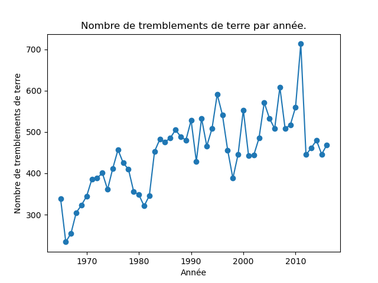

Modus operandi : l'énoncé est ci-dessous. Vous répondez dans ce document que vous m'envoyez au format pdf au plus tard à 15h55 (horaire strict). Vous m'envoyez également un fichier contenant le code python à exécuter pour résoudre les questions. Je dois pouvoir exécuter ce script sans erreur et les réponses aux questions doivent s'afficher de manière claire (affichage d'un message tel que : La réponse à la question 3 est : ...). Vous pouvez m'envoyer plusieurs emails successifs. Dans ce cas, seul le dernier (envoyé avant 15h55) sera pris en compte.
Ne pas oublier d'indiquer votre nom dans le compte-rendu et dans un commentaire au début du script python.
Nous allons étudier un jeu de données qui contient des informations concernant tous les tremblements de terre de magnitude supérieure ou égale à 5,5 qui se sont déroulés entre 1965 à 2016.
Ce fichier est disponible à l'url https://philippe-preux.github.io/ensg/miashs/datasets/earthquakes.csv.
Pour chaque séisme, le jeu de données indique :
Les questions :
# import pandas as pd
quakes = pd.read_csv ("https://philippe-preux.github.io/ensg/miashs/datasets/earthquakes.csv")
La commande quakes.shape [0] indique qu'il y a 23412 séismes dans le jeu de données.
quakes ["Type"] = quakes ["Type"].astype("category")
quakes ["Magnitude Type"] = quakes ["Magnitude Type"].astype("category")
quakes ["ID"] = quakes ["ID"].astype("category")
Les différents types de tremblements de terre sont obtenus avec la comande quakes ["Type"].unique(), qui nous indique les 4 catégories présentes dans le jeu de données : ['Earthquake', 'Nuclear Explosion', 'Explosion', 'Rock Burst'].
quakes ["DateHeure"] = pd.to_datetime (pd.DataFrame ({"year" : quakes.a, "month" : quakes.m, "day" : quakes.j, "hour" : quakes.h, "minute" : quakes.mn, "second": quakes.s}))
Il suffit de compter le nombre d'occurences de chacune des années pour connaître le nombre de séisme pour chaque année. De plus, value_counts() trie les valeurs dans l'ordre décroissant. Aussi, l'année où il y a eu le plus de séisme est la première, celle où il y en a eu le moins est la dernière :
# l'année où il y a eu le plus de séismes : quakes.loc[:,"a"].value_counts().index[0] # 2011 # l'année où il y a eu le moins de séismes : quakes.loc [:,"a"].value_counts().index [len(quakes.loc[:,"a"].value_counts())-1] # 1966
Le nombre médian de séismes est simplement obtenu par : np.median (quakes.loc [:,"a"].value_counts()) qui donne 456,5.
Une manière simple consiste à faire une boucle vérifiant que la date correspondant à la iè ligne est inférieure ou égale à celle de la ligne i+1.
ordonne = True
for i in range (quakes.shape [0]-2):
if quakes.loc [i, "DateHeure"] > quakes.loc [i+1, "DateHeure"]:
ordonne = False
break
if ordonne:
print ("Les données sont ordonnées chronologiquement")
else:
print ("Les données ne sont pas ordonnées chronologiquement")
decompte = quakes.loc[:,"pays"].value_counts()
Même principe que ci-dessus mais sur l'attribut pays.
quakes.loc[:,"pays"].value_counts().index
indique d'abord unknown qui n'est pas un pays. On prend donc la valeur suivante qui est l'Indonésie.
Cela signifie que les coordonnées (longitude, latitude) ne correspondent pas à un la surface d'un pays. Ces séismes ont lieu en mer.
len (quakes.loc [:, "pays"].value_counts())
donne 103, donc 103 pays où il y a eu au moins 1 séisme. Il faut retirer la valeur unknown, donc la réponse est 102.
quakes.loc [quakes.loc [:,"pays"] == "France", "pays"].value_counts()
Il y en a eu 1 seul.
fig, ax = plt.subplots ()
ax.set_xlabel ("Année")
ax.set_ylabel ("Nombre de tremblements de terre")
ax.plot (quakes ["a"].value_counts().sort_index(), marker = 'o')
ax.set_title ("Nombre de tremblements de terre par année.")
fig.show()

Il y a une tendance à une augmentation du nombre annuel de séismes de 1965 à 2011 et moins entre 2011 et 2016. On constate quand même que la différence entre le minimum et le maximum est d'environ 450 séismes, soit la valeur médiane, donc une grande variabilité au fil des ans.
v = quakes.loc[:,"pays"].value_counts().values
fig, ax = plt.subplots ()
ax.plot (v [v<10000])
ax.set_ylabel ("Nombre de séismes par pays")
ax.set_ylabel ("Indices des pays (ordonnés selon le nombre de séismes)")
ax.set_title ("Distribution du nombre de séismes de 1965 à 2016.")
fig.show()
fig, ax = plt.subplots ()
ax.hist (quakes.loc [:, "Magnitude"], bins = 37)
ax.set_title ("Distribution empirique de la magnitude des séisme.")
ax.set_ylabel ("Nombre de séisme")
ax.set_xlabel ("Magnitude")
fig.show()
37 parce qu'il y a 37 valeurs différentes de magnitude dans le jeu de données.
fig, ax = plt.subplots ()
ax.loglog (quakes.loc [:, "Magnitude"].value_counts()) #, marker = 'o')
ax.set_title ("Réprésentation log-log\nde la distribution empirique de la magnitude des séismes.")
fig.show()
La courbe est assez droite sur une grande partie, ce qui est indice d'une loi de puissance (cf. le TP sur la recommandation de musique).
Non, aucune :
quakes.loc [:, ["Magnitude", "Depth"]].corr()
indique 0,02.
fig, ax = plt.subplots ()
ax.scatter (quakes.loc [:, "Depth"], quakes.loc [:, "Magnitude"], s = 2)
ax.set_xlabel ("Profondeur")
ax.set_ylabel ("Magnitude")
ax.set_title ("Magnitude en fonction de la profondeur.")
fig.show()
On ne voit vraiment pas grand chose. On peut voir que les séismes les plus intenses se déclenchent à faible profondeur. On a vaguement l'impression de voir une zone vers la gauche et une autre vers la droite et une zone plus ténue au milieu (entre 300 et 500km de profondeur).
fig, ax = plt.subplots ()
ax.scatter (quakes.Longitude, quakes.Latitude, s = 2)
ax.set_title ("Position des tremblements de terre de 1965 à 2016.")
fig.show()
On voit bien se dessiner les zones où se déroulent les séismes : les zones de subduction où une plaque tectonique s'enfonce sous une autre (côte ouest de l'Amérique, toute la zone est de l'Asie (Japon, Indonésie, ...), l'asie centrale (Himalaya)) et les rifts qui se situent généralement au milieu des océans (on voit très bien la zone centrale de l'Atlantique) ou encore en Afrique de l'est.
les_inconnus = quakes.loc [:, "pays"] == "unknown"
les_connus = quakes.loc [:, "pays"] != "unknown"
fig, ax = plt.subplots ()
ax.scatter (quakes.loc [les_inconnus, "Longitude"], quakes.loc [les_inconnus, "Latitude"], color = "black", s = 2)
ax.scatter (quakes.loc [les_connus, "Longitude"], quakes.loc [les_connus, "Latitude"], color = "blue", s = 2)
ax.set_title ("Position des tremblements de terre de 1965 à 2016.\nEn noir, les séismes en mer.")
fig.show()
Les unknowns semblent bien situés en mer.
les_explosions_nucleaires = quakes.loc [:, "Type"] == "Nuclear Explosion"
les_autres = quakes.loc [:, "Type"] != "Nuclear Explosion"
fig, ax = plt.subplots ()
ax.scatter (quakes.loc [les_autres, "Longitude"], quakes.loc [les_autres, "Latitude"], color = "blue", s = 2)
ax.scatter (quakes.loc [les_explosions_nucleaires, "Longitude"], quakes.loc [les_explosions_nucleaires, "Latitude"], color = "red", s = 10)
ax.set_title ("Position des tremblements de terre de 1965 à 2016.\nEn rouge, les séismes dus aux explosions nucléaires.")
fig.show()
volcano = pd.read_csv ("/home/ppreux/philippe-preux.github.io/ensg/miashs/l3-sd2/datasets/volcanos/volcano.csv")
fig, ax = plt.subplots ()
ax.scatter (quakes.Longitude, quakes.Latitude, s = 3)
ax.scatter (volcano.longitude, volcano.latitude, color = "red", s = 5)
ax.set_title ("Position des séismes depuis 1965 (en bleu) et des éruptions volcaniques (en rouge) connus.")
fig.show()